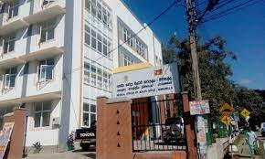

Medical Officer of Health - Mawanella |
|
|---|---|
|  | MOH Office Mawanella is a Government office located in Mawanella. It is one of the 5466 Government offices in Sri Lanka. Address of MOH Office Mawanella is Rambukkana-Mawanella Rd, Mawanella, Sri Lanka. Website of MOH Office Mawanella is http://www.health.gov.lk/. MOH Office Mawanella can be contacted at 94352246335. MOH Office Mawanella is located in a busy area and we are covering at least 336 places around it on Srilanka-Places.com. |
Base Hospital - Mawanella |
|
 |
Base Hospital Mawanella was started as a Dispensary in 1920. It was developed as a Peripheral Unit in 1970. Later it was again combined with the MOH office Mawanella and was managed under one Incharge as a Divisional Health Unit in 1990s. Later it was found that DHU was not successful and again the hospital was separated from that Unit and turned in to a base hospital in year 2000. The first and the old building is still Persisting. |
CEB Ceylon Electricity Board Office - Mawanella |
|
| CEB Ceylon Electricity Board Office - Mawanella is a City government office located in Mawanella. It is one of the 464 City government offices in Sri Lanka. Address of CEB Ceylon Electricity Board Office - Mawanella is Mawanella By Pass Rd, Mawanella, Sri Lanka. CEB Ceylon Electricity Board Office - Mawanella can be contacted at 94354928948. CEB Ceylon Electricity Board Office - Mawanella is located in a busy area and we are covering at least 254 places around it on Srilanka-Places.com. |
|
People's Bank - Mawanella |
|